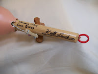
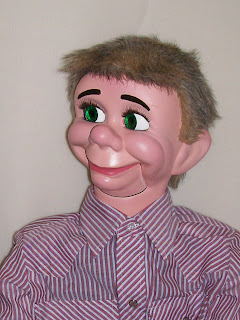
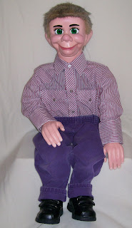
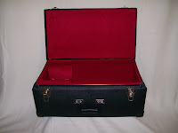

Historical Figure For Sale!
5/28/2009
{kind=link}

{kind=link}

Our daughter, Joy Scheuerman, owned Maher Studios for three years (2003-2006). Shortly before operations were closed in 2006, Joy commissioned Keith Lovik to build a ventriloquist figure for her personal collection of Maher Memorabilia. What a fun character "Cody, Jr." was! (right). He is 35" tall and is signed by Keith and dated with his completion date of 4/14/06, just two days prior to the official closing of Maher Studios (4/16/06).
Keith shipped the figure to Joy who asked me to add raising eyebrows to the figure, which I did. So why do I consider this to be an "historical" piece? Of the hundreds of Lovik World figures sold over a period of over 30 years, this is the FINAL Knee Pal built for Maher Studios by a member of the Lovik family! Truly a rare part of Maher Studios' history. It has been kept in careful storage since its completion and has never been used. Mint condition. Joy has now decided to sell, so I have it listed now on eBay, for sale at auction with no reserve and FREE shipping (USA). One-of-kind chance-of-a-lifetime: http://cgi.ebay.com/ws/eBayISAPI.dll?ViewItem&item=260418352479
{kind=link}

I have also listed a new Custom Carrying Case which is the perfect size for this figure (or any figure 35"-38" tall): http://cgi.ebay.com/ws/eBayISAPI.dll?ViewItem&item=260418361821ViewItem&item=260418361821
